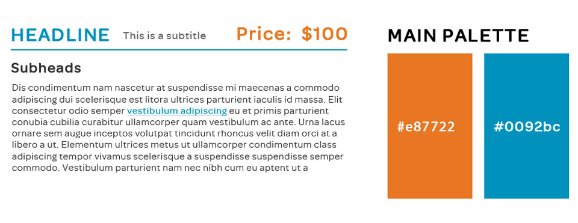
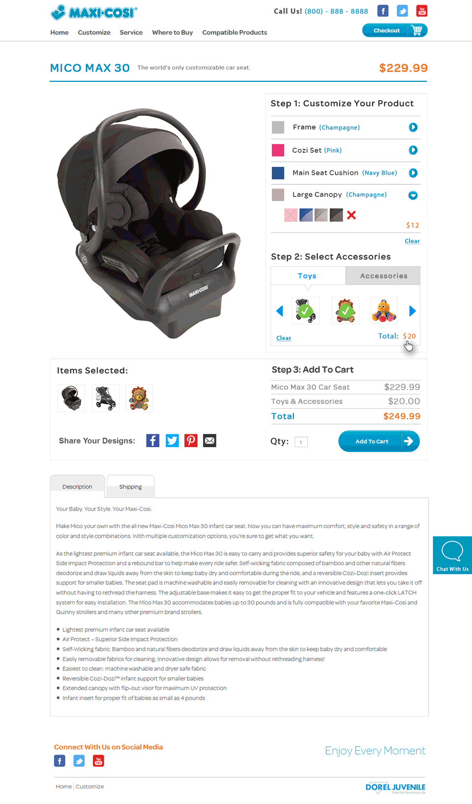

The Problem
I was asked to come up with a solution for Maxi-Cosi's Mico Max 30™ customization page. The requirements included designing a mobile friendly tool that would organize and display all the customization options available to users while still remaining simple to non-power users (ie: tired mothers/fathers and people over 40). I was also required to stay within the Maxi-Cosi branding guidelines and development limits.
The resulting wireframe was focused on containing the multitude of options above the fold while still being user-friendly enough for a quick customization and checkout process. While very simplistic, it was a great starting point for the next step of the process.
The Solution
I began by consolidating any branding information I had in one document, which then led to type hierarchy and styling in a style tile.
Once styling was nailed down I moved on to designing the user interface. I tried to stay away from overly modern aesthetics and kept with Maxi-Cosi's soft edges and Omnes Pro as a stylized but modest font. A vertical tabbing system differentiated the types of materials and color options while a horizontal tabbed slider showed accessories and toys. I decided to provide information on these extra options by allowing the user to hover over the content and replace the main image with a short description. Any material and color selections would update the photo on the page per requirements. The final result is shown below.
 << Back to Home